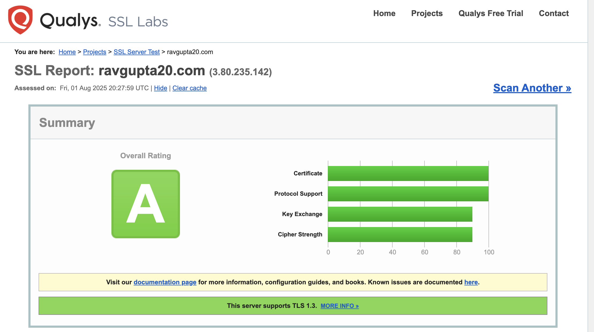

How it was made
- Created EC2 instance on AWS with security group configured to allow inbound traffic through ssh and http. The minimun required to setup the ec2 instance and test that the apache server is working.
- Access EC2 instance via the EC2 instance connect. I could have connected via putty, but quite honestly the EC2 instance connect via the console is incredibily easy.
- Installed apache server on the ec2 instance.
- Installed git on the ec2 instance.
- Generated a ssh key pair and added the public key to the ec2 instance.
- Cloned the repository from github to the ec2 instance.
Why apache over nginx?
I worked on a LAMP stack project in the past and I have spun up many EC2 instances with apache in the past and so I was very
familar with it. So much so that I wrote a little guide for myself after repeatedly doing it for practice. Since I already
had the guide, I decided to use it to get it up and running quickly.
SSL Labs Report:
